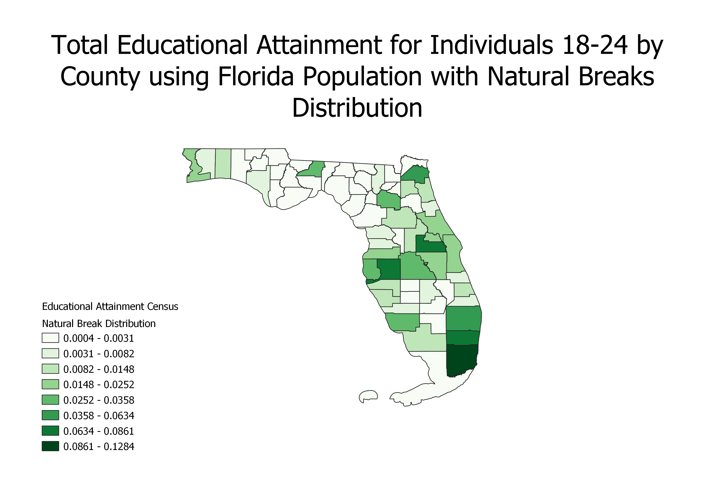
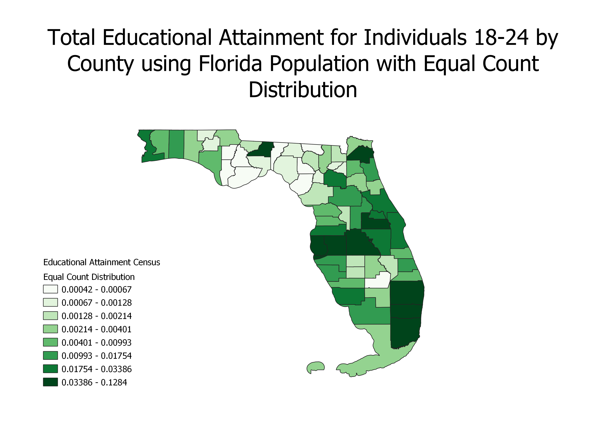
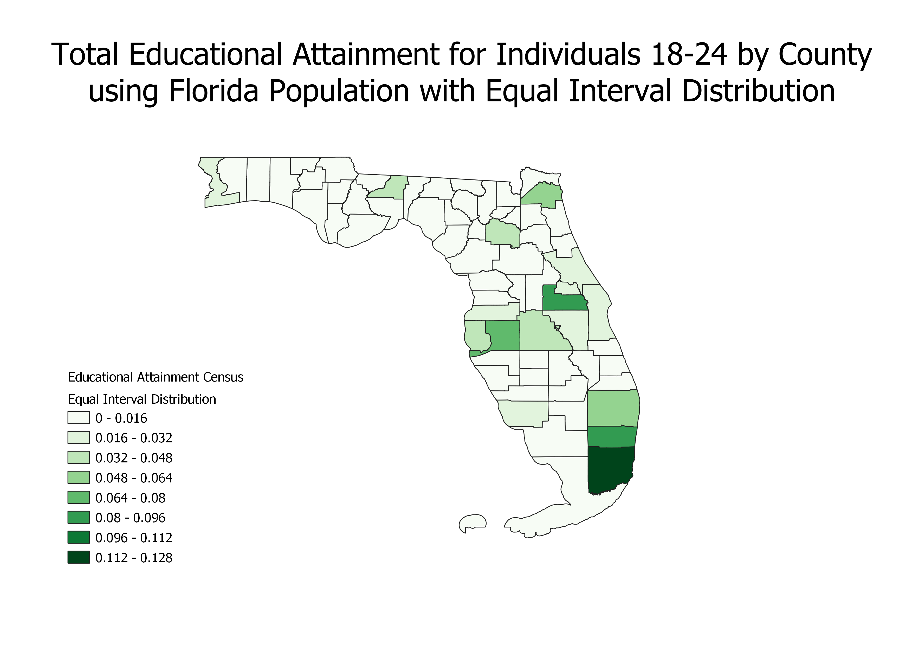

Homework 6b: Census data ratios and categories
Jesus Rodriguez
These are three cloropleths of the ratio of the educational attainment for individuals 18-24 year olds by county in the state of Florida. The ratio used was the total number of individuals 18-24 educationally attained by county divided by the population of Florida. While I understand this could misrepresent counties with smaller populations, since my dataset lacked county population information, I tried to mitigate this visually by increasing the classes on the legend to represent more groups. My main reason behind this ratio was to see if certain counties are more attractive or popular to students, but given my ratio being the population of Florida, this can also be a good visual to see which counties have bigger or more educational institutions based on attainment.
Here I used a Natural Breaks classification scheme with the ratio described above. This scheme is designed to place variable values into naturally occurring data categories. An advantage of the Natural Breaks is that it identifies real classes within the data. This is useful because it creates choropleth maps that have accurate representations of trends in the data. A con is that this distribution is not well suited for data that have low variance.

Here I used a Equal Count classification scheme with the ratio described above. This scheme creates intervals so that each has an equal proportion of the sample. A pro to this is that each class will be equally represented on the choropleth map. A con would be that it may group outliers in categories that are a poor representation of the actual distribution of the data.

Here I used a Equal Interval classification scheme with the ratio described above. This scheme divides the range of data values into intervals that are the same size. A pro is that it creates a choropleth that is good for showing the values that are either over or under represented. A con is that intervals that are over represented will result in choropleth maps that appear as mostly the same color.

Data used for this project
CSV dataset
Link to shapefile